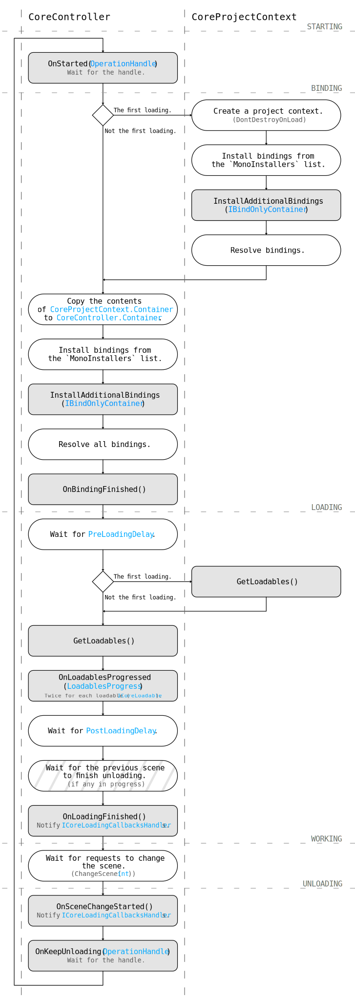

Getting started
CoreController and CoreProjectContext are classes that you use to control your project in the AlchemyBow.Core framework.
CoreProjectContext
CoreProjectContext is used to store shared dependencies in the global (project) scope. To set it up create a class that inherits from it.
using AlchemyBow.Core;
using System.Collections.Generic;
public class MyCoreProjectContext : CoreProjectContext
{
protected override IEnumerable<ICoreLoadable> GetLoadables()
{
return null;
}
}
Then, create a prefab and place it in the Resources folder under the path Core/NameOfYourCoreProjectContextClass, e.g. Assets/Resources/Core/MyCoreProjectContext.
CoreController
CoreController is a scene scope handle of the framework. In order to start, you need to have at least one. Create a class that inherits from it (as a generic parameter, pass your project context type).
using AlchemyBow.Core;
using System.Collections.Generic;
public class MyCoreController : CoreController<MyCoreProjectContext>
{
protected override IEnumerable<ICoreLoadable> GetLoadables()
{
return null;
}
}
Then, you can add your CoreController to any game object and enter the play mode. Nothing special will happen, but know that everything is already working.
Life circle
Working with CoreController and CoreProjectContext is mostly about overriding their abstract and virtual members. The best way to understand what they are responsible for is to analyze the life cycle of the framework. 
1. Starting stage
At the Awake message the CoreController starts. CoreController.OnStarted(OperationHandle) is called. You can override this method to implement some early logic, for example to enable a loading screen. However, note that dependencies are not injected at this stage.
Tip
The OperationHandle parameter is used for methods that are expected to perform multi-frame operations. For example, in the OnStarted method you can start a coroutine or a task in another thread. The CoreController will hold until OperationHandle.MarkDone() is called.
2. Binding stage
This stage handles dependency injection.
At first, the CoreController ensures that the CoreProjectContext exists. If it doesn't, the following three steps are performed:
- The project context prefab is instantiated and moved to
DontDestroyOnLoad. - The project context installs bindings from its MonoInstallers list and calls
CoreProjectContext.InstallAdditionalBindings(you can override this method to add some custom binding logic). - All project context dependencies are resolved in its container.
Then, the contents of the CoreProjectContext.Container are copied to the CoreController.Container (dynamic collection bindings are sealed during the process).
Then, the CoreController installs bindings from its MonoInstallers list and calls CoreController.InstallAdditionalBindings (you can override this method to add some custom binding logic).
Finally, the CoreController resolves all dependencies and calls CoreController.OnBindingFinished().
3. Loading stage
This stage is dedicated to performing operations that are potentially time consuming. It consists of the following steps:
- Wait for realtime seconds defined by
CoreController.PreLoadingDelay. - Get loadables (ICoreLoadable) returned by
CoreProjectContext.GetLoadables()(only during the first loading) andCoreController.GetLoadables()(during each loading). - Load each loadable sequentially. (You can override
CoreController.OnLoadablesProgressed(LoadablesProgress)to respond to the loading process progress. For example, to update your loading screen.) - Wait for realtime seconds defined by
CoreController.PostLoadingDelay. - Wait for the previous scene to finish unloading (if any).
At the end, CoreController.OnLoadingFinished() is called. The default implementation of this method triggers related callbacks from the ICoreLoadingCallbacksHandler.
(For details on ICoreLoadable and ICoreLoadingCallbacksHandler see Loading.)
4. Working stage
This stage defines what happens between loading and unloading. The recommended solution is to use a state machine (see: stateful behaviour). However, it is not mandatory, so you can use any method you like.
5. Unloading stage
This stage is the last phase of the scene scope life cycle (for CoreController). It starts when you call CoreController.ChangeScene(int) and consists of the following steps:
CoreController.OnSceneChangeStarted()- the default implementation of this method triggers related callbacks from the ICoreLoadingCallbacksHandler (see Loading for more details).CoreController.OnKeepUnloading(OperationHandle)- you can override this method to smoothly clean up external resources (such as additional scenes).
Warning
If you use the UnityEngine.UI package, add UnityEngine.EventSystems.EventSystem.current.enabled = false; to the CoreController.OnSceneChangeStarted() method. Otherwise, the event system may crash during the scene change process.